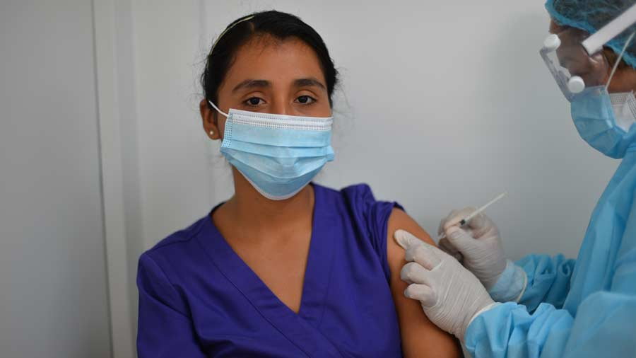

Según cifras de la universidad Johns Hopkins, la cifra de muertos superaba las 498.786 personas hacia las 00H00 GMT del lunes. El primer fallecido por covid-19 en Estados Unidos fue anunciado hace un año, el 29 de febrero de 2020.
El vicerrector Administrativo de la UES, Juan Rosa Quintanilla, informó que para este 2021 la Universidad de El Salvador invertirá $11 millones para el desarrollo de la modalidad virtual educativa, puesto que las clases continuarán en línea este año según autoridades de la ciudad universitaria.
Vie. 22 feb 2021, 10:00am
El personal de salud fue el primero en recibir la vacuna contra la Covid-19 de la farmacéutica AstraZeneca proveniente de la India. Esta fue la manera peculiar en la que muchos de ellos reaccionaron cuando les colocaron la inyección. Las autoridades sanitarias aseguran que se tiene una capacidad para almacenar hasta 16 millones de dosis del antídoto del coronavirus en el Centro Nacional de Biológicos. Según lo informó el Ministerio de Salud, fueron 20,000 dosis las que aterrizaron el pasado 17 de febrero.